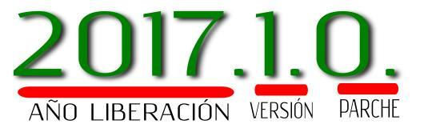
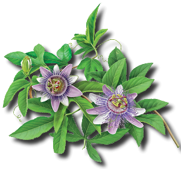

A partir del año 2017, Jokte CMS! cambia la denominación de su versionado.
El número de versión está formado con la siguiente estructura:
Ejemplo gráfico:

El NOMBRE CLAVE es la denominación informal de la versión.
La Comunidad Juuntos y los que hacemos Jokte CMS! somos acérrimos defensores de las culturas originarias milenarias que pueblan el continente americano por lo que hemos decidido desde el comienzo que estos "NOMBRES CLAVES" sean palabras en lenguas originarias como ser: mapudungun(mapuche), wayuunaiki, quechua, guaraní, etc.
El NOMBRE CLAVE de la versión actual es:
Significado:
La palabra 'Rayén' es de origen mapuche, del idioma mapudungun y significa 'flor'.
La imagen que representa esta versión es una flor denominada en guaraní 'mburucuyá' que crece en varias regiones de américa del sur. Para mayor información consulte [Wikipedia]
Gráfico:
Rayén" />
ANTE DUDAS O SUGERENCIAS, ACUDA SIEMPRE A NUESTRO FORO
Muchas gracias por elegir Jokte CMS LATAM!, un proyecto de software 100% libre y enfocado en América Latina y el Caribe